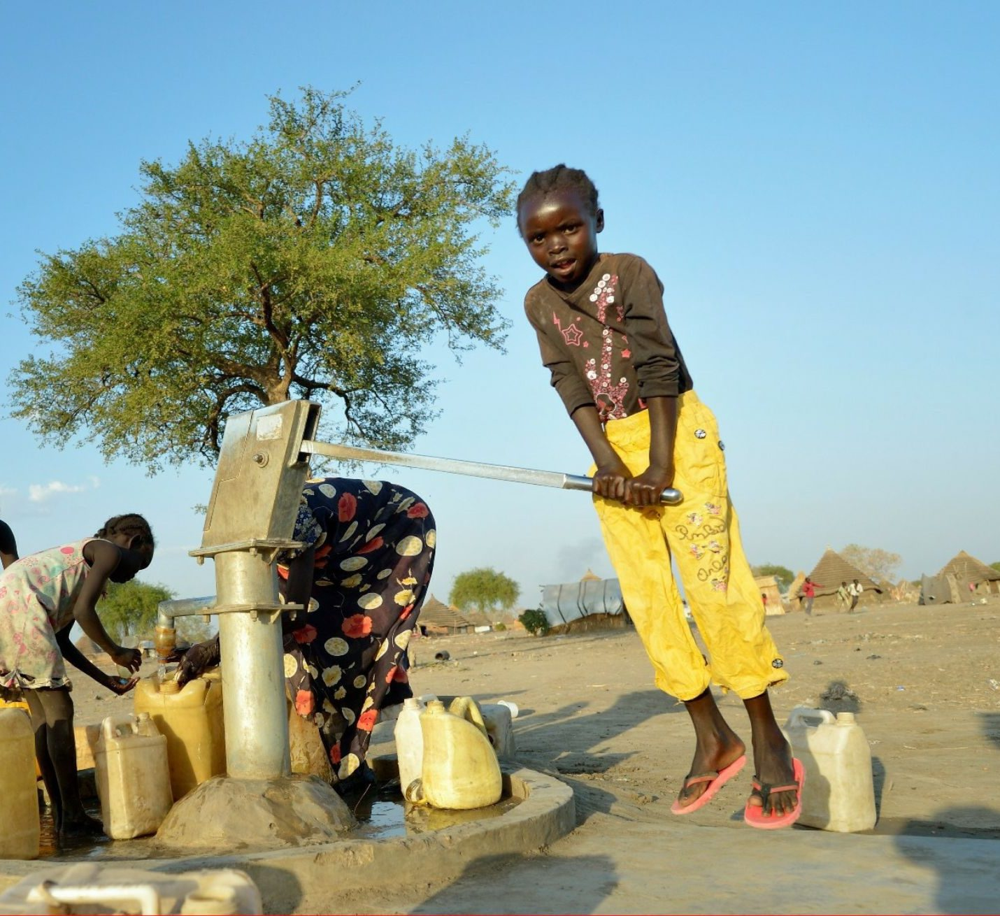
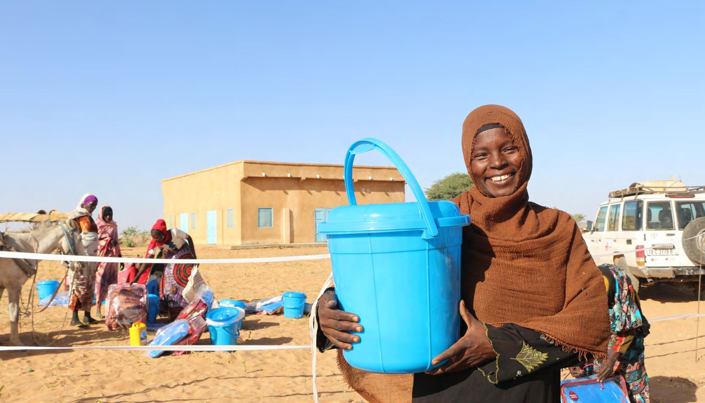
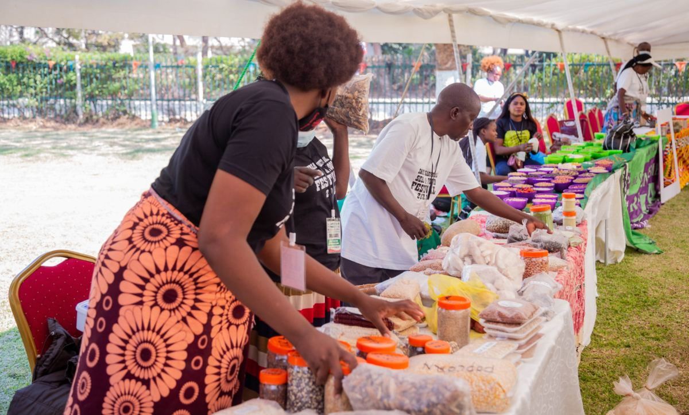
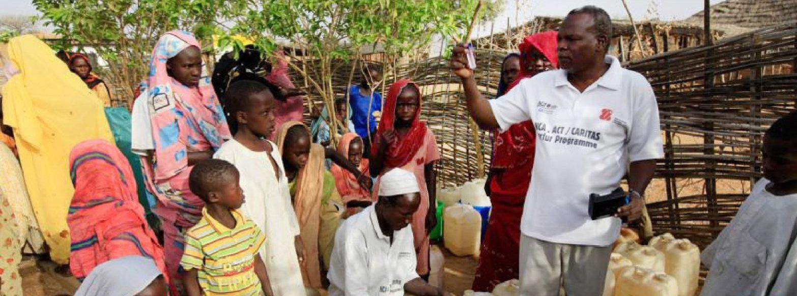

Notre mission
Actes 1:8« Témoigner de l'amour de Dieu »
À travers des œuvres de charité et de justice, en vue d'assurer le développement humain intégral, avec une attention prioritaire aux pauvres et aux plus démunis.
Membre de la confédération Caritas Internationalis

Caritas Africa est le ministère de la pastorale sociale de l'Église catholique en Afrique : un réseau de 46 Caritas nationales au service des pauvres et des plus exclus.
Depuis 1995, 46 Caritas nationales cheminent ensemble au service des plus pauvres.
Caritas Africa anime, coordonne, représente et renforce 46 Caritas nationales, pour que chacune serve au mieux les plus pauvres de son pays.
Formellement liée à l'Église catholique en tant que ministère de la pastorale sociale en Afrique, elle a été officiellement constituée le 20 janvier 1995 à Matola, au Mozambique, après l'approbation de ses premiers statuts par les Caritas nationales.
Qui sommes-nousAider l'Église en Afrique à exercer son ministère socio-pastoral de charité et de justice : aider les plus pauvres, répondre aux urgences humanitaires, promouvoir le développement humain intégral.
Soutenir les Caritas membres dans leur mission de charité et de justice sociale, et faciliter la coordination et la synergie de leurs actions.
Favoriser la collaboration et la coopération par l'animation, la coordination, la représentation, le plaidoyer, le développement institutionnel et le renforcement des capacités.
Actes 1:8« Témoigner de l'amour de Dieu »
À travers des œuvres de charité et de justice, en vue d'assurer le développement humain intégral, avec une attention prioritaire aux pauvres et aux plus démunis.
Jean 10:10« La vie en plénitude pour tous »
Des communautés épanouies en Afrique, où l'amour, la réconciliation, la justice, la paix et la prospérité prévalent pour tous, et où la dignité de chaque femme, homme et enfant est promue.


Inspirés par l'Évangile, nous travaillons dans un esprit de communion, de coopération fraternelle et de partenariat pour une Afrique meilleure.
Nos actions
Promouvoir le développement humain intégral, avec une attention prioritaire aux pauvres et aux plus exclus.
Photo : rapport annuel 2021

Donner aux personnes marginalisées les moyens d'agir et de plaider pour des communautés résilientes, avec leur propre participation.
Photo : rapport annuel 2021

Répondre efficacement aux urgences, aux côtés des Caritas nationales de chaque pays.
Photo : Caritas Africa, cadre stratégique 2024–2030

Engager les membres Caritas dans le changement transformationnel, à tous les niveaux du réseau.
Photo : rapport annuel 2021

Le plaidoyer auprès des institutions africaines et internationales, comme la déclaration conjointe au sommet UA–UE.
Sommet extraordinaire de l'Union africaine, Malabo, mai 2022. Photo : rapport annuel 2022
Lire la déclaration
Phase 3 du programme A2P-DIRO, 2019–2023 : un accompagnement de proximité personnalisé pour le renforcement organisationnel et le changement des Caritas en Afrique subsaharienne.
2,5 millions d'euros
de budget total, cofinancé par l'Agence française de développement, le Secours Catholique – Caritas France, Caritas Espagne et les Caritas nationales de la Région Afrique.
17 pays
avec 17 Caritas nationales et 202 Caritas diocésaines comme parties prenantes directes.
40 millions
Plus de 40 millions de personnes vulnérables dans la population ciblée.
Le programme en détailCommission régionale 2023–2027 : Mgr Pierre CIBAMBO NTAKOBAJIRA, président
Gouvernance et équipeSix zones, qui portent le nom des conférences épiscopales régionales. Chacune est coordonnée par une Caritas nationale.
Explorer le réseauNos rapports annuels depuis 2011, notre cadre stratégique et les réflexions du réseau, en français, anglais et portugais.
Rejoignez Caritas Africa dans son engagement en faveur de la justice et de la charité pour les plus défavorisés, aux côtés de 46 Caritas nationales.
Toute suspicion d'abus ou d'exploitation d'un enfant ou d'un adulte vulnérable impliquant le personnel ou les collaborateurs de Caritas doit être signalée. L'identité de la personne qui signale n'est divulguée qu'en cas de « besoin d'en connaître ».